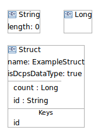

You will be connecting a number of the types together so it could be helpful to review how to make connections if you're not familiar with how to do so.
Ultimately, basic types like Long, Octet, or String, must be referred to by the other types. When using connectors an option is to add these basic types to the diagram and later connect to these types. Alternatively, you can quickly create basic types on the fly as they are needed using the figure connector handles. (You can have multiple figures of the same basic type on the same diagram if you wish.)
Struct and Union have Fields which are named references to types (similar to class attributes). To add a Field, click on the Field tool in the palette and then click on the Struct or Union to contain the Field. You then fill out the Field using the form "name: type". For example, to indicate that a Field is to be named count and that points to a Long you would enter "count: Long". (Basic types do not need to be created first.) The type can be from any of the active DataLibs in addition to the types in the currently opened diagram.
Structs with attribute isDcpsDataType set to true are candidate types to use for Topic types. An example Struct is shown below.
A Struct is created by selecting a Struct from the palette and adding to the diagram.
After giving your Struct a name you will then want to give it Fields as discussed above.
After you define the Fields for the Struct you may want to re-order them. You can do so by dragging a field and dropping it into the new position.
Keys for the Struct are created similar to how Fields are created. Select the Key tool from the palette and add it to the Struct. Then in the Struct figure type the name of the Field that should be used for the Key. Similar to how Fields can be re-ordered, Keys can be re-ordered by dragging and dropping.
For collection types Array and Sequence, the type used for the collection must be specified. This is done by connecting the Array or Sequence to the type of the collection.
An example of a Sequence of Structs is shown below.

Unions contains Branches to hold a list of Cases along with a Field to apply if any of the Case literals matches with switch specification.
These Branches and Cases as placed in collapsable compartments are shown in the example below.

This example corresponds to the IDL:
union U switch (char) {
case 'L':
long long_mem;
case 'c':
case 'C':
char char_mem;
default:
string string_mem;
};